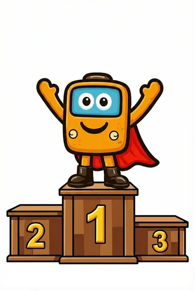

Linhas favoritas
Salve as linhas que você usa todo dia e acesse com um toque.
Início / Funcionalidades
Funcionalidades
Mapa em tempo real, rotas, alertas da comunidade e notícias do transporte — feitos com a ajuda de quem está na rua.
Veja onde estão os carros ativos da sua linha e quanto falta para chegarem, com base na localização compartilhada pelos passageiros.
Quanto mais passageiros compartilham, mais carros aparecem — e mais certa fica a previsão.
Diga para onde quer ir e o WeBuz sugere as linhas que levam você até lá, incluindo o trecho a pé até o ponto.
Atraso, bloqueio ou mudança na linha? Você fica sabendo na hora, porque quem está na rua avisa.
Outros passageiros confirmam cada alerta, e isso dá mais confiança à informação.
Desvio na Av. Brasil
12 confirmaramAtraso de 15 min
21 confirmaramÔnibus lotado no Terminal Norte
8 confirmaramE ainda
Salve as linhas que você usa todo dia e acesse com um toque.
Acompanhe tudo o que acontece no transporte público da sua cidade em um só lugar.
Depois que você embarca, o compartilhamento continua mesmo com o celular no bolso. A configuração é guiada e simples.

Nível 5: Explorador da Cidade
Você precisa de 150 pontos para o Nível 6!
Seus pontos atuais
1.250
Missões do dia
Compartilhe 1 viagem
+20 pontosAvalie ao desembarcar
+10 pontosConfirme 2 alertas
+15 pontosPontos, missões e prêmios
Cada ação no WeBuz rende pontos:
Junte pontos, desbloqueie conquistas, suba no ranking da sua cidade e troque seus pontos por benefícios e recompensas.
Baixe o WeBuz, encontre sua linha e veja o seu ônibus chegando.